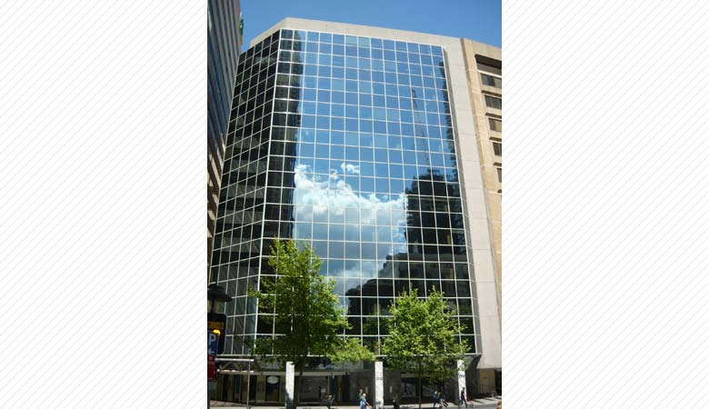
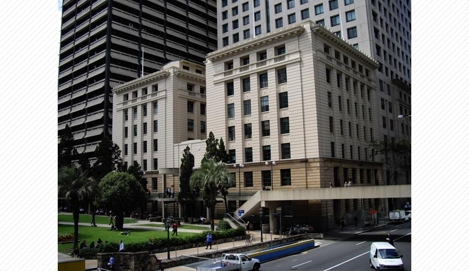

シドニー校舎外観
カナダ、バンクーバーに本社を持ち世界７都市にキャンパスを展開する大規模教育グループのオーストラリア校です。

ブリスベン校舎外観
カナダ、バンクーバーに本社を持ち世界７都市にキャンパスを展開する大規模教育グループのオーストラリア校です。

便利な立地条件
ブリスベン セントラル駅から徒歩２分の場所にあり歴史的文化財に指定されている建物の中にあります。
建物の前には、芝生の公園が広がり、学生さんたちはこの公園でランチをとったり休み時間を気ままに過ごします。

安心の大規模校
プログラムやコース内容は、実際に就学中の学生の希望や、次の時代に必要となるスキルを見極め、、
時代に先駆けて開発されているので、ILSC-AUSTRALIAでは他に類を見ない多種多様なプログラムを受講することができます。

全ての授業は選択制
授業は全て選択制で、興味のある科目を１日最大３教科学ぶことができます。
また、４週間ごとの学期制をとっているので、落ち着いた環境の中しっかりと英語力を身につけることができます。

フレキシブルな授業スケジュール
ILSC-AUSTRALIA では、週１５時間のパートタイム、週２１時間のフルタイム、週２６時間のフルタイムインテンシブの中から
それぞれのスタイルに合わせた授業スケジュールを選択することが可能です。

実務資格
ILSC-AUSTRALIAで培った英語力を帰国後の就職に生かすためのサポートとして、
ILSC-AUSTRALIA ではさまざまな検定試験の対策コースを用意しています。

厳しい英語オンリーポリシー
「頑張る人がかっこいい」環境を整えるため、また、「真面目に取り組む人が損をする」ことの無いよう、
学校設立以来伝統的に続けられているお約束です。

日本人スタッフによる万全のサポート体制
日本人スタッフが日本人学生を対象としたワークショップを定期的に行っています。
ワークショップの内容は、日本人の苦手な自己主張スキルのトレーニングや生活に最低限必要な情報などです。
＜１．カレッジ概要・環境について＞
1.1.安心の大規模校
ILSC-AUSTRALIA は、カナダ、バンクーバーに本社を持ち世界７都市にキャンパスを展開する大規模教育グループのオーストラリア校です。
プログラムやコース内容は、実際に就学中の学生の希望や、次の時代に必要となるスキルを見極め、時代に先駆けて開発されているので、ILSC-AUSTRALIAでは他に類を見ない多種多様なプログラムを受講することができます。
さらに、このようなプログラムの中から、それぞれの都市の需要にあわせて選別を行うので、授業の質を保ちながら、各都市で異なる学生の需要に答えた授業を提供しています。
1.2.便利な立地条件
ILSC-AUSTRALIA はブリスベン セントラル駅から徒歩２分の場所にあり歴史的文化財に指定されている建物の中にあります。
建物の前には、芝生の公園が広がり、学生さんたちはこの公園でランチをとったり休み時間を気ままに過ごします。
銀行・移民局・郵便局・病院は全て徒歩５分圏内にあり、ショッピングモールにも簡単にアクセスができます。
1.3.厳しい英語オンリーポリシー
ILSC-AUSTRALIAでは厳しく英語オンリーポリシーが守られています。
学校スタッフだけではなく、学生さんたちも一丸となって取り組む約束事なので、「万一校内で英語以外の言葉が話されていた場合は、ぜひともスタッフにそのことを伝えに来てください」ということをオリエンテーションでお話しています。
これは、クラスメイトの行為の「密告」や「裏切り」ではなく学校環境の整備のための「協力」をしていただくためです。
「頑張る人がかっこいい」環境を整えるため、また、「真面目に取り組む人が損をする」ことの無いよう、学校設立以来伝統的に続けられているお約束です。
＜２．授業・スケジュールについて＞
2.1. 全ての授業は選択制
授業は全て選択制で、興味のある科目を１日最大３教科学ぶことができます。
また、４週間ごとの学期制をとっているので、落ち着いた環境の中しっかりと英語力を身につけることができます。
また、学期最終日には担任教師と個別面談があり、次の学期からの学習計画を一緒に立てるので無駄のない授業選択をすることができます。
また、１３のレベルに細分化されたレベル分けなので、４週間ごと英語力全体の伸びを実感することができます。
2.2. フレキシブルな授業スケジュール
ILSC-AUSTRALIA では、週１５時間のパートタイム、週２１時間のフルタイム、週２８時間のフルタイムインテンシブの中からそれぞれのスタイルに合わせた授業スケジュールを選択することが可能です。
パートタイムでは１日１教科、フルタイムでは１日２教科、フルタイムインテンシブでは１日３教科を履修することができます。
フルタイムインテンシブコースの履修例（ワーキングホリデー対策）
＊全ての科目は2011年9月現在、実際にブリスベン校で開講されている授業です。
１ヶ月目（初中級）
一般英語 ３時間
役立つ英語表現 １．５時間
会話 １．５時間
２ヶ月目（初中級）
ビジネス英語 ３時間
自己主張スキル １．５時間
仕事探し準備クラス １．５時間
３ヶ月目（中級）
一般英語 ３時間
文法 １．５時間
ヨガ英語 １．５時間
４ヶ月目（中級）
パワースピーキング ３時間
プレゼンテーションスキル１．５時間
カフェワークスキル １．５時間
＜3. ILSC-AUSTRALIAで可能なプラスアルファについて＞
3.1. 検定試験対策
ILSC-AUSTRALIAで培った英語力を帰国後の就職に生かすためのサポートとして、ILSC-AUSTRALIA ではさまざまな検定試験の対策コースを用意しています。
具体的には、就職活動に必須となるTOEIC試験対をはじめ、ヨーロッパで認知度の高いケンブリッジ検定（FCE/CAE）対策、またIELTS対策、そのほか、英語教授法の検定試験など、レベルに応じて対策コースを選択することが可能です。
コース変更の際は、担任の教師や、日本人カウンセラーが親身に相談に乗ります。
3.2. 実務資格
ILSC-AUSTRALIAで培った英語力を帰国後の就職に生かすためのサポートとして、ILSC-AUSTRALIA ではさまざまな検定試験の対策コースを用意しています。
日本では、まだまだ馴染みの浅いオーストラリアの「サティフィケイト/ディプロマ」のコースも同じカレッジの中で受講することが可能です。
これらは、各産業分野の専門性を高めるためにオーストラリア人も積極的に受講するコース内容です。
ILSC-AUSTRALIA で提供しているコースは、主にビジネス系と英語教授系のコースとなりますので、帰国後の就職にも役立てていただくことが可能です。
3.3. 大学準備
オーストラリアでの高等教育を目指す方は、ILSC-AUSTRALIA の大学準備コースで対策をしてただくことが可能です。
また、ILSC-AUSTRALIA 提携の大学にパスウェイを使って進学することも可能です。
＜4. 学生サポートについて＞
4.1. 日本人スタッフによる万全のサポート体制
日本人スタッフが日本人学生を対象としたワークショップを定期的に行っています。
ワークショップの内容は、日本人の苦手な自己主張スキルのトレーニングや生活に最低限必要な情報などです。
「わがまま」と「自己主張」の違いは？シェアアコモデーションの今の相場は？住むならどこがいい？など、現地についてから必ず必要となる内容を質疑応答などを交えながらリラックスした雰囲気で時間をかけてお話します。